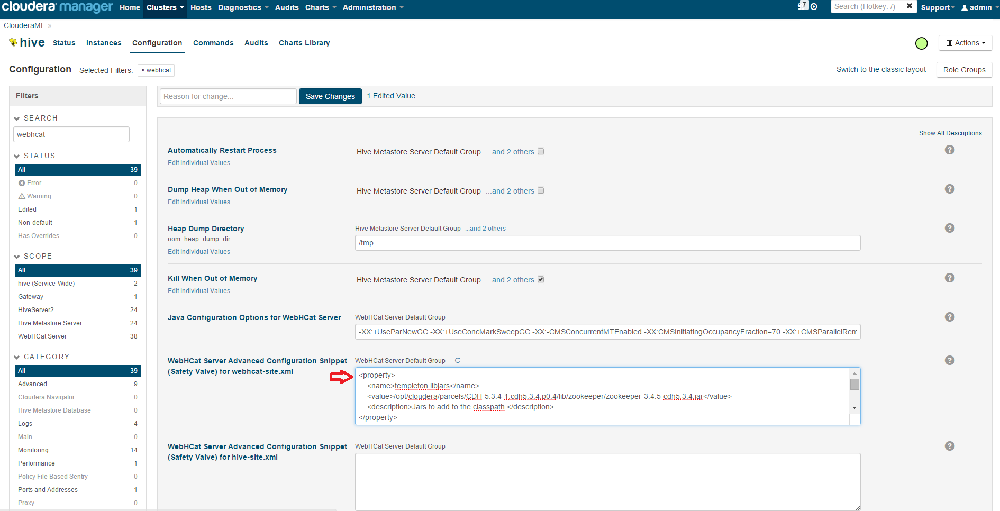

{kind=link}
{kind=link}
{kind=link}
http://<webhcatserver>.cloudapp.net:50111/templeton/v1/ddl/database?user.name=hdfs To list tables in the default database, run:
http://<webhcatserver>.cloudapp.net:50111/templeton/v1/ddl/database/default/table?user.name=hdfs However, we are not able to run Hive queries yet. This is because the default WebHCat configuration includes jars that are not in the Cloudera cluster environment, and Hive meta store URIs need to be updated. Step 3: Configure WebHCat To update WebHCat configuration, go to Cloudera Manager, select Hive, Configuration, and type "webhcat" in the Search box to narrow down the configuration. Update "WebHCat Server Advanced Configuration Snippet (Safety Valve) for webhcat-site.xml" section as following:  The configuration should include the following. Note that the settings here correspond to the Cloudera environment deployed by Azure Marketplace, if you are using a different cluster, you might need to adjust the settings to match your cluster.
{kind=link}
<property>
<name>templeton.libjars</name>
<value>/opt/cloudera/parcels/CDH/lib/zookeeper/zookeeper.jar</value>
<description>Jars to add to the classpath.</description>
</property>
<property>
<name>templeton.hive.path</name>
<value>/opt/cloudera/parcels/CDH/lib/hive/bin/hive</value>
<description>The path to the Hive executable.</description>
</property>
<property>
<name>templeton.hive.properties</name>
<value>hive.metastore.uris=thrift://<hivemetastoreserver>:9083</value>
<description>Properties to set when running hive.</description>
</property>
After the configuration is updated, restart WebHCat server for the update to take effect. Now, we should be able to run Hive queries via WebHCat. For example, to select all rows from table "example1" in the default database, run:
curl -s -d user.name=hdfs -d execute="select+*+from+default.example1;" 'http://<webhcatserver>.cloudapp.net:50111/templeton/v1/hive'
WebHCat writes its job output to /templeton-hadoop, so Hive user must have access to this hdfs folder. You can go to Hadoop UI or Hue to view the job status.
Step 4: Connect to Azure ML
Log in to Azure ML Studio, click on your Reader module, and select "Hive Query". Configure Hive as following with your own WebHCat server URL, HDFS user, and HDFS Server URL:
Run the experiment, and verify that the result of the job is written to /DataLabReaderStore in HDFS:

{kind=link}